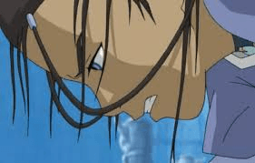
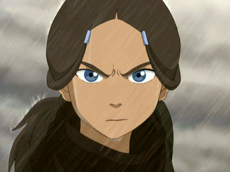
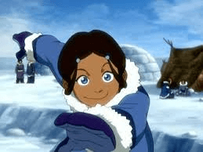
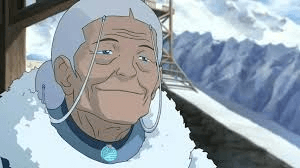

" A única dobradora de água da tribo da água do sul"
A Historia de Katara
Katara tinha oito anos de idade quando perdeu sua mãe num ataque da Nação do Fogo. Depois disso, resignou-se em assumir um papel maternal e doméstico, enquanto seu irmão Sokka treinava para se tornar um guerreiro. Quando completou 12 anos, seu pai, Hakoda, e outros homens da tribo partiram para o Terra a fim de participarem da resistência à Nação do Fogo, deixando Katara, Sokka e sua avó, Kanna, cuidando dos aldeões restantes.
Anos depois, durante uma pescaria, Katara e Sokka encontraram Aang e Appa aprisionados no interior de um iceberg. Eles se tornam grandes amigos e Aang decide conduzir Katara até a Tribo da Água do Norte, para que ela possa encontrar um mestre da dobra de água. Eles são bem recebidos por sua tribo irmã, mas o Mestre Pakku rejeita Katara por ela ser mulher. Mas graças a sua forte personalidade e espírito de luta, Katara consegue convencer Pakku a ensiná-la. Ela rapidamente aprende a aprimorar sua técnica, e ao partir com Aang e Sokka rumo ao Reino da Terra, é reconhecida por Pakku como uma legítima mestra da dobra de água.
No início da segunda temporada, Pakku entrega a Katara um frasco contendo água do Oásis Espiritual. Ela então acompanha Aang na busca por um mestre na dobra de terra. Em uma fortaleza no Reino da Terra, o insano General Fong coloca a vida de Katara em perigo, o que enfurece Aang a ponto dele entrar no Estado Avatar (nessa ocasião, ficamos sabendo que Katara é a única capaz de acalmar Aang para que ele volte ao normal). Mais tarde, em Ba Sing Se, Aang é mortalmente ferido, mas graças às propriedades místicas da Água do Oásis Espiritual, Katara consegue trazê-lo de volta à vida.
A partir da terceira temporada, Katara torna-se cada vez mais poderosa. No terceiro episódio do Livro 3, ela destrói a fábrica que poluía o rio e isso fez com que a tribo que vivia nos arredores da fábrica fosse atacada pelos exércitos da nação do fogo. Ela encontra Hama, uma velha habitante da Tribo da Água que anos antes havia sido aprisionada pela Nação do Fogo. Para escapar de seu cativeiro, Hama desenvolveu uma técnica aterradora e mortal: a dobra de sangue, capaz de dominar as pessoas e forçá-las a executar qualquer comando, como se fossem marionetes.
Para salvar as vidas de Aang e Sokka, Katara é obrigada a usar a dobra de sangue em Hama, sendo depois abatida pelo remorso em usar uma técnica considerada "amaldiçoada". No 16° episódio da terceira temporada Katara vai atrás do assassino de sua mãe, mas não consegue se vingar porque não teve coragem de matar o homem. No último episódio a série, Katara e Zuko lutam contra Azula, a princípio era só um Agni Kai, somente Zuko e Azula, porém Azula envolveu Katara na luta, e Katara foi forçada a lutar, então ela derrota Azula. Após a guerra Katara e seus amigos aparecem em Ba sing Se na loja de chá do Iroh, onde agora todos tem uma vida normal, mas adiante, Katara e Aang se beijam.



